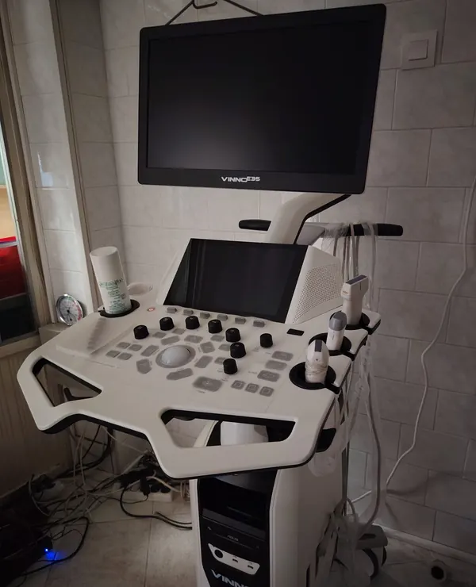
Klinički pregledi s laboratorijskom i ultrazvučnom dijagnostikom.
Posebna ponuda za nove pacijente - prvi pregled besplatan! Nazovite: 01 2012 068 Prvi pregled besplatan - 01 2012 068
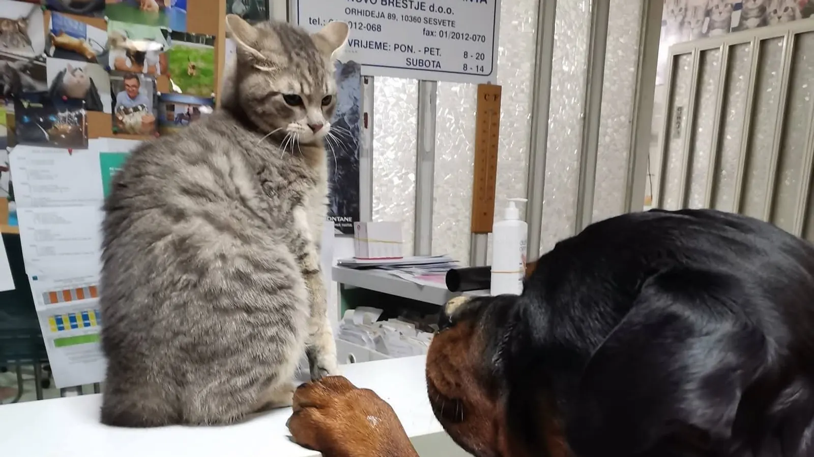
20+ godina brige za ljubimce Sesveta
Stručna skrb, nježan pristup i susjedska briga - ambulanta u koju vaši ljubimci rado dolaze, na istoj adresi već više od 20 godina.
Dogovorite termin
Nazovite i dogovorite pregled bez čekanja - za kirurške zahvate termin je obavezan.
Kontakt
01 2012 068
veterinarnb@gmail.com
Orhideja 89, Sesvete
Radno vrijeme
Pon-pet 9-12 i 16-19 Sub 9-12
Nedjelja: zatvoreno
Naše usluge

Klinički pregledi s laboratorijskom i ultrazvučnom dijagnostikom.
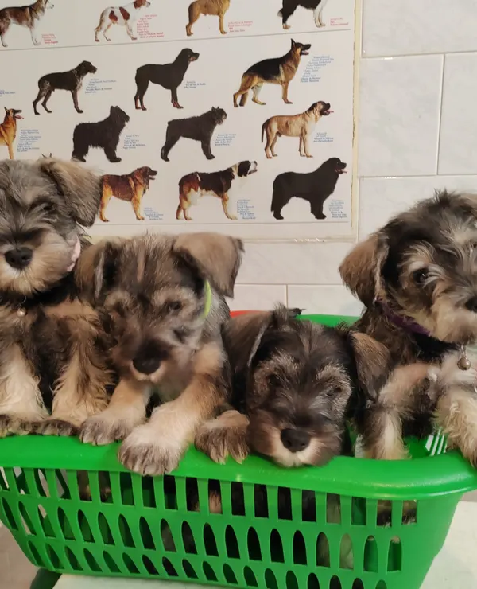
Zaštita od bjesnoće, zaraznih bolesti i parazita.
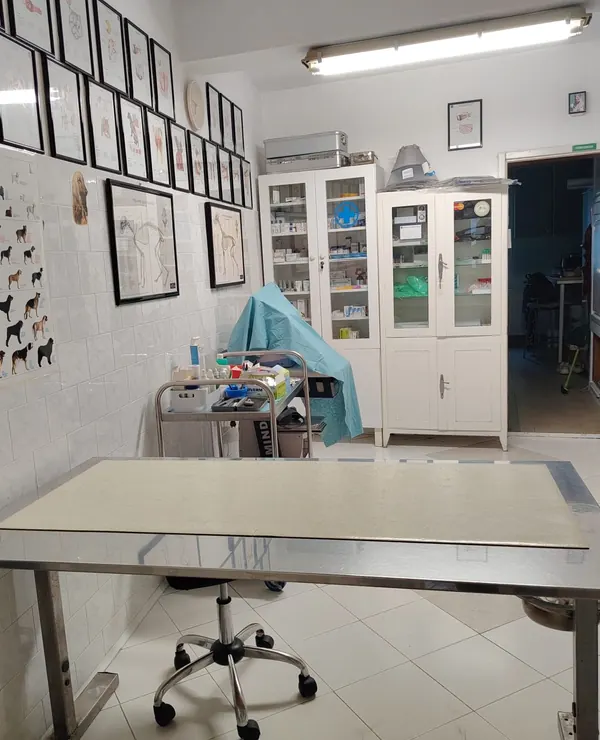
Kastracije, carski rez, kirurgija mekih tkiva…
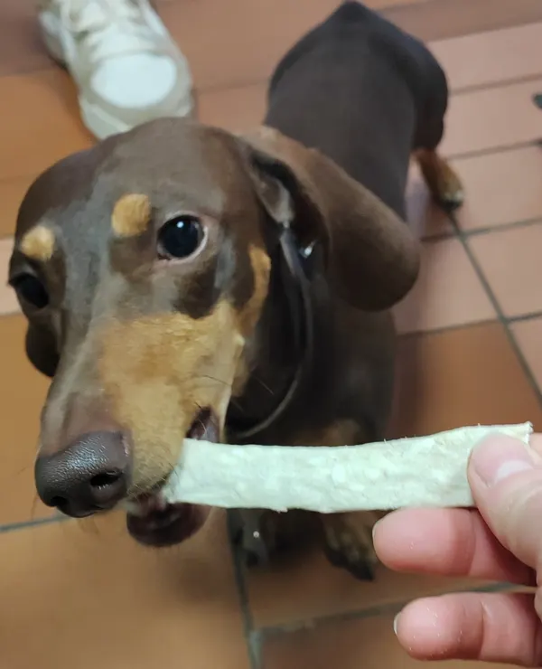
Ultrazvučno uklanjanje zubnog kamenca.
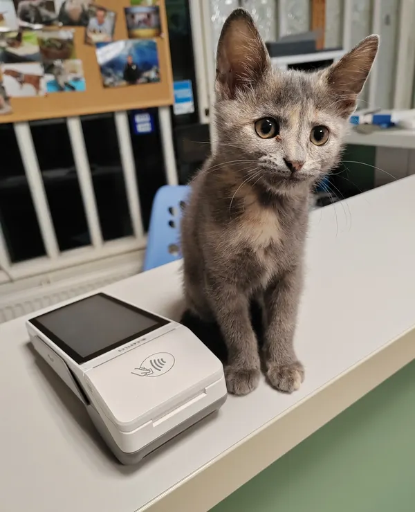
Označavanje, registracija i EU putovnice.
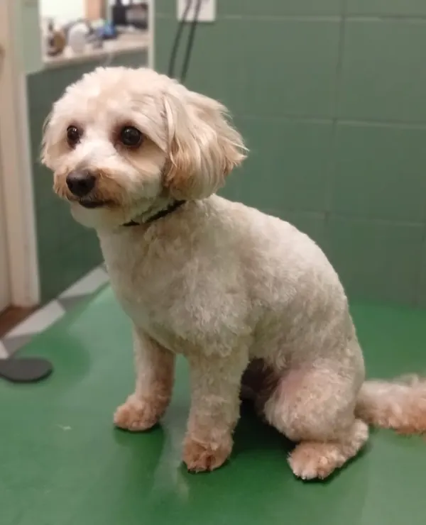
Od prehrane šteneta do njege starijeg psa.
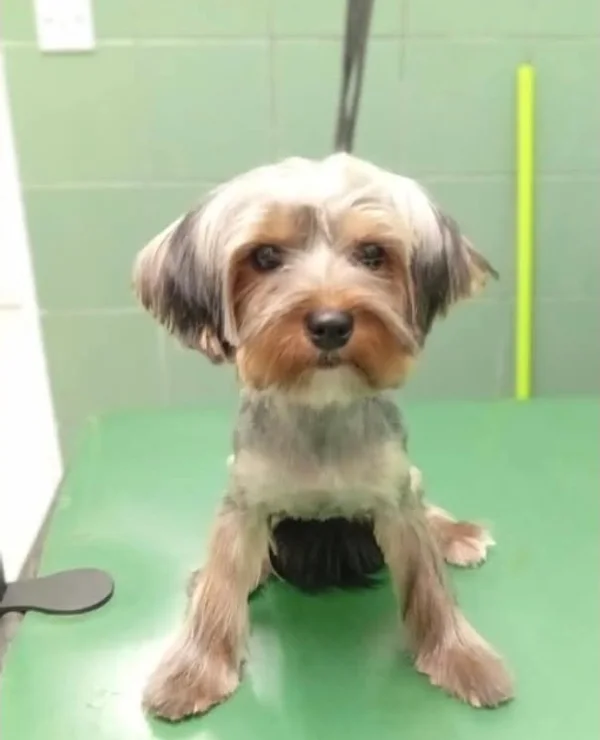
Šišanje, kupanje i uređenje pasa.
Svaki pregled počinje razgovorom - jer vi najbolje poznajete svog ljubimca (uzimanje anamneze). Klinički pregled možda je i najvažniji dio cijele dijagnostike.
Za dodatne pretrage surađujemo s certificiranim ustanovama (HVI, Veterinarski fakultet i Laboklin).
Cijepljenje pasa i mačaka počinje već sa 7 tjedana starosti. Prije svakog cijepljenja životinja treba biti tretirana od unutarnjih parazita (dehelmintizacija) - prvi tretman već od 4 tjedna starosti.
Nakon pregleda životinja se prvi put cijepi i mikročipira, izdaje se EU putovnica te se upisuje u Središnji upisnik pasa. Uz to dajemo i jasne upute o cijepljenju. Cijepljenje protiv bjesnoće zakonska je obveza za pse starije od 3 mjeseca, a za mačke je obavezno ako ih vodite na put preko granice RH. Za termin nazovite 01 2012 068.
Kirurški zahvati vrše se u općoj anesteziji uz prethodnu preoperativnu obradu. Nakon svake operacije pacijent ostaje kod nas na promatranju u stacionaru.
Za dogovor nazovite prije, pa ćete dobiti upute za pripremu vašeg ljubimca.
Zubni kamenac nije samo estetski problem - uzrokuje upale desni, bol i gubitak zuba, a bakterije iz usne šupljine opterećuju i unutarnje organe.
Kamenac uklanjamo ultrazvukom, nježno i temeljito, i pokazat ćemo vam kako zube ljubimca održavati kod kuće. Za termin nazovite 01 2012 068.
Pse mikročipiramo i upisujemo u Središnji upisnik pasa (zakonska obveza). Vlasnik kuje s leglom dužan je štence cijepiti i mikročipirati na svoje ime te ih upisati u upisnik; prilikom prodaje ili udomljavanja mijenja se vlasnik u upisniku.
Od prvog cjepiva šteneta do njege ljubimca u zrelim godinama - svaka životna dob nosi svoja pitanja, a mi smo tu da na njih odgovorimo bez žurbe.
Savjetujemo o prehrani, njezi i prevenciji, i pratimo zdravlje vašeg ljubimca kroz godine - jer najbolju skrb pruža netko tko ga poznaje. Nazovite nas na 01 2012 068.
Šišanje škarama i mašinicom, kupanje te njega dlake, pandži i ušiju - prilagođeno pasmini i temperamentu vašeg psa.
Grooming vodi naša groomerica Petra Jaić. Za termin nas nazovite na 01 2012 068.
Ambulantu vodi Ines Petrović, dr. med. vet., uz veterinarsku tehničarku i groomericu Petru Jaić - uz jednostavnu filozofiju: stručna skrb i nježan pristup za svakog psa i mačku. Vlasnici iz kvarta vjeruju nam već više od 20 godina.
Kod nas je sve na jednom mjestu - preventiva, dijagnostika, liječenje i kirurški zahvati - uz vlastiti laboratorij i ultrazvuk. Mala smo, kvartovska ambulanta u srcu Novog Brestja: bez gužve velikih klinika i uz osobni pristup u kojem poznajete ljude koji brinu za vašeg ljubimca.
Svaka životinja zaslužuje pažnju, strpljenje i nježnu ruku - trudimo se da se i vi i vaš ljubimac kod nas osjećate opušteno.
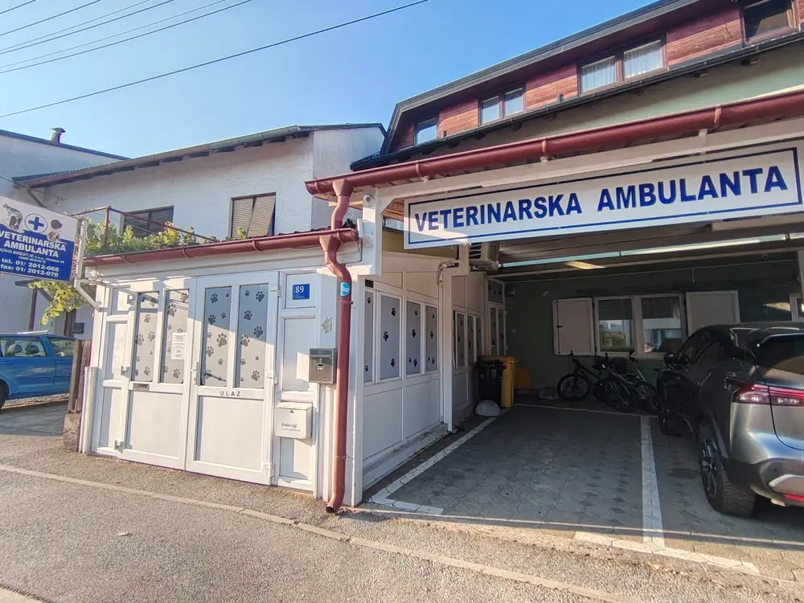
Naš tim
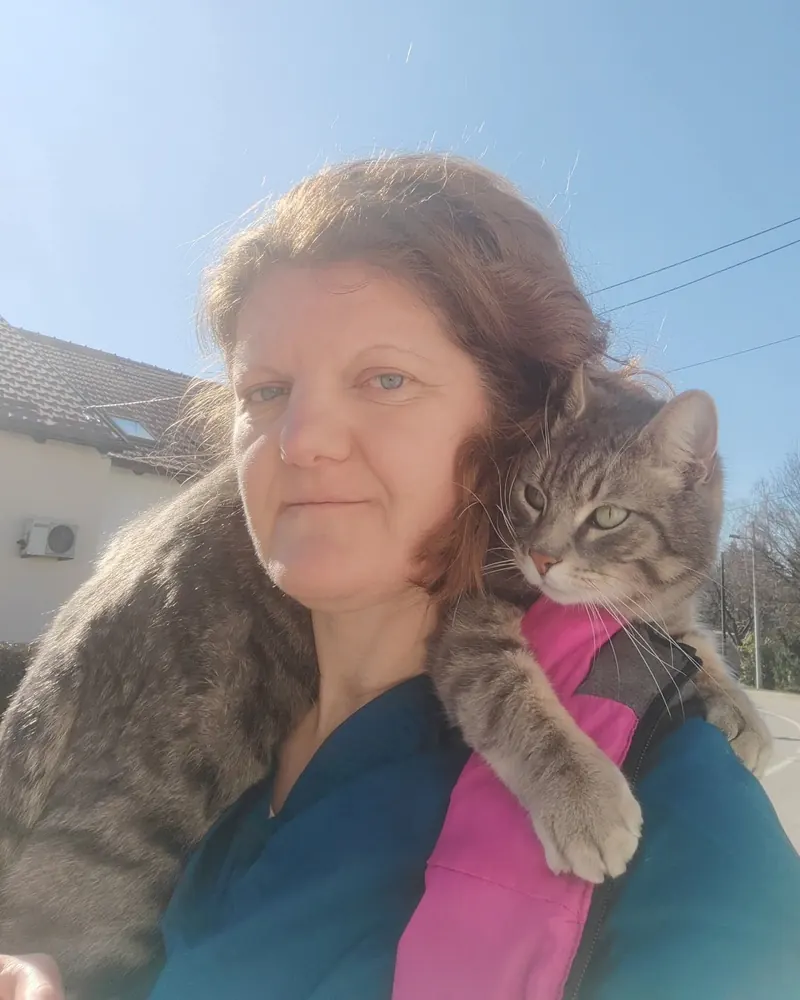
dr. med. vet. voditeljica
Veterinarski fakultet u Zagrebu završila sam 2004. i od tada radim u ambulanti Novo Brestje za kućne ljubimce. Državni stručni ispit za ovlaštenog veterinara položila sam 2006., a 2008. upisala poslijediplomski specijalistički studij „Patologija i uzgoj malih mesojeda", na kojem sam magistrirala 2011. Redovito sudjelujem na veterinarskim kongresima i radionicama - posljednju, iz ultrazvuka abdomena, pohađala sam 2026. na Okean akademiji u Pančevu. U slobodno vrijeme volim planinarenje, alpinizam i putovanja, a kućni ljubimci su mi svakodnevna radost.
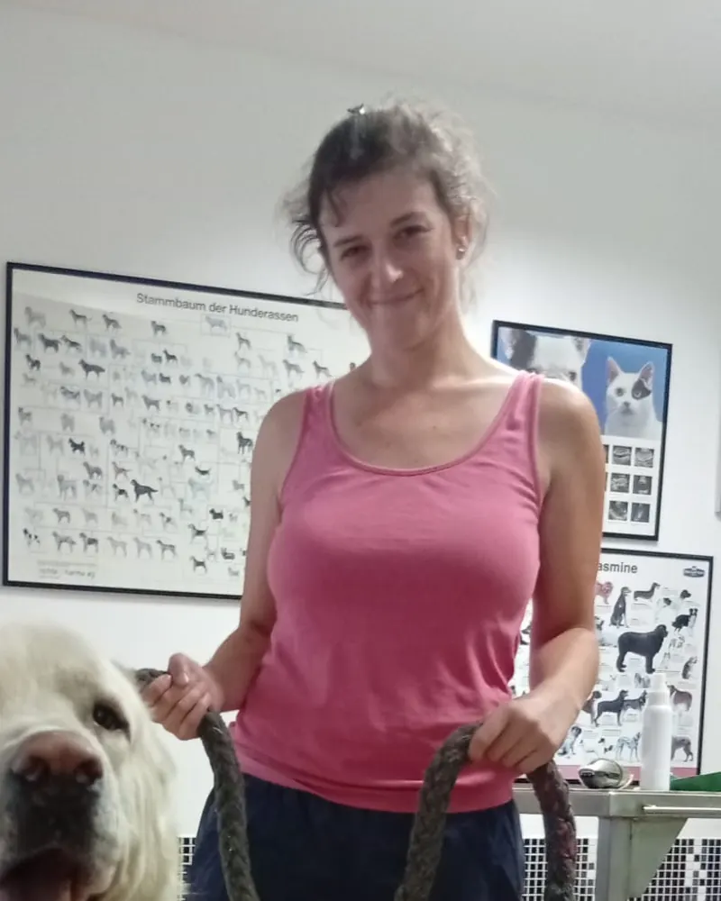
vet. teh. groomerica
Rođena sam 1991. godine u Kutini. Neću reći od rođenja, ali otkad za sebe znam, željela sam raditi sa životinjama, stoga sam završila srednju veterinarsku školu u Zagrebu 2012. godine. Stručno osposobljavanje odradila sam u Skloništu za nezbrinute životinje grada Zagreba, Dumovcu, i nakon toga položila stručni ispit. Dodatno sam u Mambu završila osnovni tečaj za njegu i uređenje pasa te još jedan osnovni tečaj šišanja škarama. U slobodno vrijeme, osim što brinem o svojim ljubimcima, brinem i o 13 biljaka, volim ples i pjesmu, plivanje...
Novosti
Za nove pacijente
Upoznajmo se bez obveze - dovedite ljubimca na prvi pregled bez naknade. Nazovite i dogovorite termin.
Nazovite nasPodsjetnik
Provjerite knjižicu ljubimca i javite se kad je vrijeme.
Podsjetnik
Zaštitite ljubimca kroz toplu sezonu.
Obavijest
U ambulanti možete nabaviti veterinarsku hranu za pse i mačke - pitajte nas za preporuku prilagođenu vašem ljubimcu.
Galerija
Recenzije
Svi moji peseki i mace ovdje su pacijenti i tako već više od 15 godina. Usluga je vrhunska kao i doktori. Svaka čast.
Odlična usluga i izuzetno ljubazno osoblje. Sve su detaljno objasnili i pristupili s puno pažnje. Topla preporuka!
Veterinarska ambulanta Novo Brestje stvarno uvijek pruža super skrb i uslugu. Doktorica Ines Petrović i cijela ekipa su profesionalni, brižni te učinkoviti…
Vrhunska usluga, osoblje predobro i velika briga za ljubimce. Za svaku preporuku.
Jako sam zadovoljna, Bongo i Votka vole ići tamo 💗💗
Odlicna ambulanta, uvijek spremni pomoci i izuzetno strucni. Cijene povoljne. Usluga vrhunska.
Vrlo ljubazno i profesionalno osoblje koje se stvarno brine o životinjama. Pregled je bio temeljit, a sve mi je jasno objašnjeno…
Odgovori na ono što nas vlasnici najčešće pitaju - o dolasku, pregledima i dokumentima.
Imate još pitanja?
Slobodno nazovite ili nam pišite - rado ćemo vam pomoći.
Telefon: 01 2012 068
E-mail: veterinarnb@gmail.com
Pon-pet 9-12 i 16-19 Sub 9-12
Nazovite nasPreporučujemo da nas prije dolaska nazovete na 01 2012 068 kako biste izbjegli čekanje, a za kirurške zahvate termin je obavezan.
Ponesite putovnicu ili zdravstvenu knjižicu ljubimca ako je imate. Ako dolazite prvi put, dođite koju minutu ranije da se ljubimac opusti u prostoru.
Da - obavljamo mikročipiranje i upis u Upisnik kućnih ljubimaca te izdajemo putovnice i svu prateću dokumentaciju.
Besplatno, na parkingu odmah ispred ambulante u Ulici Orhideja 89.
Ovisi o dobi i vrsti cjepiva - štenci i mačići cijepe se po rasporedu u prvim mjesecima života, a odrasli ljubimci najčešće jednom godišnje. Nazovite nas pa ćemo provjeriti što je vašem ljubimcu na redu.
Na zahvat ljubimac dolazi natašte, a sve detaljne upute dobit ćete pri dogovoru termina. Nakon zahvata vodimo vas kroz oporavak - s jasnim uputama i kontrolnim pregledom.
Da - subotom od 9 do 12 sati. Radnim danom tu smo od 9 do 12 i od 16 do 19 sati.
Kontakt
Adresa
Ulica Orhideja 89, 10360 Sesvete
Telefon
01 2012 068 Mob: 091 510 6075
Parking
Besplatan parking ispred ambulante
Radno vrijeme
Ponedjeljak-petak 9:00-12:00 i 16:00-19:00 Subota 9:00-12:00 Nedjelja i praznici: zatvoreno
Karta čeka vašu privolu
Google karta učitava se s Googleovih poslužitelja i pritom im se prenosi vaša IP adresa. Prikazom uključujete kategoriju „Vanjski sadržaj / karta".
{kind=link}
{kind=link}
{kind=link}
{kind=link}
{kind=link}
{kind=link}
{kind=link}